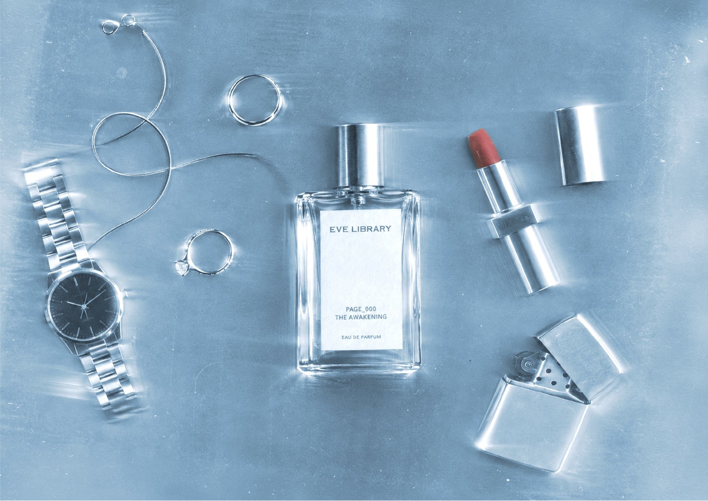

콘셉트 이미지
THE AWAKENING
시작을 여는 순간
THE FRAGRANCE LIBRARY / 01
The Moment of Awakening
향으로 감각을 깨우고, 나의 순간을 한 페이지씩.
서로 다른 다섯 개의 페이지를 펼쳐 보세요.

향 컬렉션
FIVE PAGES / 02하나의 번호, 하나의 장면.
마음에 남는 페이지에서 시작하세요.
시작을 여는 순간
나의 문장으로 남기는 순간
다시 꺼내 보고 싶은 순간
조금 멀리 바라보는 순간
빛 앞에 드러나는 순간
전체 다섯 가지 향을 PAGE 번호 순서로 소개합니다. 이 순서는 출시 순서를 의미하지 않습니다. 제품 이미지는 콘셉트 연출입니다. 향조·농도·용량·가격·출시일은 확정 후 안내하며, 아직 판매를 시작하지 않았습니다.
THE LIBRARY / 03
PAGE는 마음에 남은 향을 다시 찾기 위한 표식입니다.
숫자의 순서보다, 당신이 머무르고 싶은 장면에서 시작하세요.
저널
THE JOURNAL / 04향을 둘러싼 제작과 관찰의 이야기.
확정된 제작 과정과 관찰을 담을 공간입니다.
현재 발행된 저널은 없습니다.
제품 이미지는 콘셉트 연출입니다. 향조·농도·용량·가격·출시일은 확정 후 안내하며, 아직 판매를 시작하지 않았습니다.